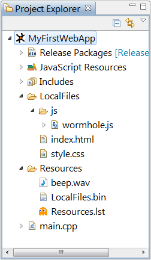

The MoSync SDK has rich capabilities for building complete applications with HTML5, JavaScript, and CSS. You can access device services and Native UI from JavaScript. You can include resources like images, audio files and videos. You can even extend your app with code written in C/C++, if needed.
Want to get started quickly? Read the Getting Started with HTML5 and JavaScript guide, then come back here for a deeper look at HTML5 and JavaScript in the MoSync SDK.
MoSync has a native widget system, and one of the widget types is the WebView widget. This means you can use web technologies to create your application, create a native application with HTML/CSS/JavaScript, and deploy it to the app stores as a standalone appliction. You can use established web standards and JavaScript libraries, such as jQuery, jQuery Mobile, and Sencha Touch. Furthermore, you can reuse your current web-based code when developing mobile apps.
You can code your entire application using HTML, CSS and JavaScript, or you can mix web technologies with C++, using MoSync C/C++ to access device functionality not available in HTML5. Depending on which langauges and libraries you wish to use, you can write all or most of the application logic in JavaScript, or you can write the application logic in C/C++ and use HTML and CSS for the user interface of the application.
To get started quickly, create a new project from one of the HTML5 templates. This will give you an HTML5 project which is ready to build and run. MoSync's HTML5 templates are small working applications that give you a starting point to modify and extend. Here is what the different templates do:
Another way to get started is to copy one of the HTML5 example applications and alter it. To copy a project is easy to do in Eclipse, just select the project you wish to copy in the Project Explorer, right click it and select copy. Then right click again and select paste.
When you have created an HTML5 project in Eclipse, you will see a folder called /LocalFiles. This is where you put your HTML, CSS, JavaScript, and resource/media files. /LocalFiles is the root of all your web content. This is typically where index.html goes.
This is the file system layout you get when creating an HTML5 template project.

The file wormhole.js contains the JavaScript libraries for accessing devices services and Native UI. This file is included in all template projects, so you can easily use Native UI from a Web UI project, if you should find out that you want to do that at some point. Note that wormhole.js consists of several JavaScript files concatenated together into one file.
The main HTML file and the starting point of the application is index.html. You can name this file anything you want, but if you change the name, also update the following line in main.cpp that opens the start page:
// This line is in main.cpp
showPage("index.html");
The file styles.css contain the style sheed definitions for the app. You can replace index.html and use any style sheet and JavaScript files you wish, but if you want to access device services, you need to include wormhole.js into your index.html file, and add the "deviceready" event listener in JavaScript:
// This line is in index.html
document.addEventListener("deviceready", displayDeviceInfo, true);
Study the sample index.html generated by the template for further details.
Put all your HTML5 resource files (images, audio files, videos, etc.) in the /LocalFiles folder (or in a subfolder to /LocalFiles.) In your HTML5, use relative paths to identify the resources that your application needs, within the /LocalFiles folder.
The /Resources folder contains the data files for the C/C++ layer. Generally, you do not to put anything in this folder unless you are working to develop a C/C++ layer for your app.
(During a normal build, there is a build step called "Bundle", which takes the folders and files in /LocalFiles and packages them into a single file called LocalFiles.bin. (LocalFiles.bin won't be created until you actually build the project, it isn't visible in the file list initally). In /Resources, there is a file called Resources.lst, which specifies which data to package with the application, and it includes LocalFiles.bin. At runtime, when the application is launched, the contents of LocalFiles.bin is unpacked and copied to the application's local file system on the device. To speed up application launching, the system computes a checksum of the content in LocalFiles.bin, and only copies the data if this checksum has changed. If you have very many files, the first application launch may take some time, but subsequent launches will be fast.)
The /Resources folder also contains a sound file, beep.wav, which is used to play the system "beep" sound.This file is referenced in main.cpp. You can replace this file with your own sound file, if you wish. (For more about C/C++ resource handling, see our Resource Compiler Reference.)
Finally, we have the file main.cpp, which contains the C++ code that that sets up the application and creates a WebView to display the HTML/CSS content and run JavaScript code. The basic class used in main.cpp is HybridMoblet, which we subclass and application specific code to. (In MoSync, a moblet is a class that handles events in an application.) HybridMoblet is a moblet designed to be used for web applications. It has one WebView widget that is displayed full-screen. It is hidden if you wish to use Native UI widgets only, the JavaScript code then runs in the hidden WebView widget.
For most HTML5 applications, you don't need to touch anything in main.cpp.
In physics, a wormhole is a shortcut through spacetime. In MoSync space, a wormhole connects JavaScript and C/C++. If you want to provide functionality that invokes C++ code from JavaScript, you can edit main.cpp to add that functionality. This is what the HTML5/JS/C++ Hybrid Project template application shows you how to do. In this project, the beep and vibrate actions are implemented in custom C/C++ code, rather than being called using the Wormhole library rutines. The details of MoSync wormholes are explained in the guide Communicating Between JavaScript and C++ in MoSync.
Making cross-platform web-based user interfaces has always ben considered a challenge, first on desktop browsers, and now on mobile devices. The web is full with advice on how to develop mobile web apps, here we highlight some useful advice.
A useful trick for controlling the initial zoom level is to set the width of the browser viewport the head section of the HTML-page, using the viewport meta tag. The following sets the width to 320 pixels and also prevents the page from being zoomed:
<meta name="viewport" content="width=320, user-scalable=no">
Further reading:
Another trick is to use em's as the unit for page elements and font sizes. One em is equal to the size of the current font size, and thus scale between different screen sizes. For example, in your style sheet, you can use:
font-size: 1.4em;
Search the web for mobile application development with HTML and CSS and you will find a vast source of information. Keep in mind, however, as HTML5/CSS evolve and new platforms enter the market, best practices for user interfade design and layout may be revised.
The guide Getting Started with HTML5 and JavaScript shows you how to build and run HTML5 applications on various platforms, using the MoSync Eclipse IDE.
MoSync SDK includes several HTML5 example programs. These programs illustrate different approaches to using HTML/JavaScript in MoSync applications:
To make your app have an nice icon, you need to have two files in your project. One XML-file with a .icon extension, for example App.icon, and one SVG file with the actual icon image. If your SVG file is named Icon.svg, this is the content of App.icon:
<?xml version="1.0" encoding="UTF-8"?>
<icon>
<instance size="default" src="Icon.svg" />
</icon>
Place the XML-file and the SVG-file in the top-level root directory of your project (same level as main.cpp).
To create a new XML-file, right-click on the project name in the Project Explorer in Eclipse, and select New/File. Name the file App.icon.
To create an SVG-file, use a drawing program and save the file in the MoSync project folder. Remember to right-click the project name and select Refresh (F5) to make the file be visible in Eclipse. You can also copy an existing SVG-file and paste it into the project by right-clicking the project folder and selecting Paste.
There are several programs available for creating SVG-images, for example the open-source drawing program Inkscape.
When you rebuild the program in Eclipse, the icon will be added to the resulting application package.
More details can be found in the Application Icons guide.